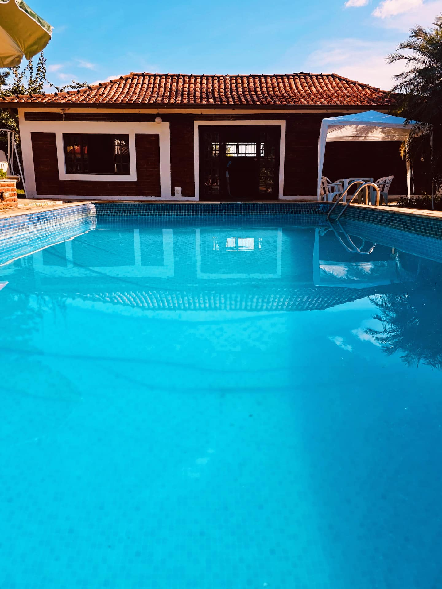

14
novembroSábado
A partir das 15h
O começo da festa
Depois do nosso casamento civil, a gente se encontra na chácara. Churrasco, piscina e um brinde ao que vem pela frente.
O nosso próximo capítulo
O nosso sim.
Com você por perto.
14 de novembro de 2026 · Sarapuí, SP
Vem celebrar com a gente14 & 15 novembro
Chácara J.F · interpretação da luz do entardecer
Com amor, para você
14 . 11 . 2026
No dia 14 de novembro, vamos dizer nosso sim no civil. E, depois, queremos celebrar do nosso jeito: perto da natureza e de quem faz parte da nossa vida.
Preparamos um encontro íntimo, com churrasco, piscina, abraços demorados e tempo para estar junto. Entre familiares e amigos queridos, você é parte desse momento.
Esperamos você.
Wesley & Vinícius
14 & 15 de novembro
Um fim de semana para deixar o relógio de lado e aproveitar a melhor companhia.

A partir das 15h
Depois do nosso casamento civil, a gente se encontra na chácara. Churrasco, piscina e um brinde ao que vem pela frente.
Com calma, sem pressa
Pode ficar para dormir. No domingo, a celebração continua com calma, para aproveitar a companhia e esse lugar por mais um dia.
Não precisa trazer nada para o churrasco.
Sua presença é o nosso presente.
Nós dois
Entre tantos momentos,
agora vem o nosso sim.
Uma vida inteira de pequenos grandes momentos.
2026Para aproveitar cada instante
É um encontro para estar à vontade.
O resto, a gente prepara com carinho.
Venha com uma roupa confortável, que combine com um dia na chácara. Se quiser aproveitar a piscina, lembre da roupa de banho e dos seus itens pessoais.
Sim! A ideia é aproveitar os dias 14 e 15 juntos. Combine com a gente para organizarmos os lugares de quem vai ficar.
À noite, o encontro continua com tranquilidade: respeitaremos o silêncio da chácara entre 22h e 8h.
Não precisa trazer nada para o churrasco. Vamos cuidar de tudo com carinho. Traga só seus itens de uso pessoal e a vontade de aproveitar.
Um encontro íntimo, com cerca de 30 pessoas, entre familiares e amigos. Depois do casamento civil, esperamos você na chácara a partir das 15h para o churrasco, a piscina e muitos abraços.
O caminho para o nosso encontro
A natureza de Sarapuí é o cenário que escolhemos para viver esse dia com você.
Avenida Alexandre Chauar, 1604Sarapuí · São PauloCEP 18225-000 · BrasilCerca de 2h a 2h30 de São PauloEstimativa de carro, conforme o ponto de partida e o trânsito. Confira a rota no dia.